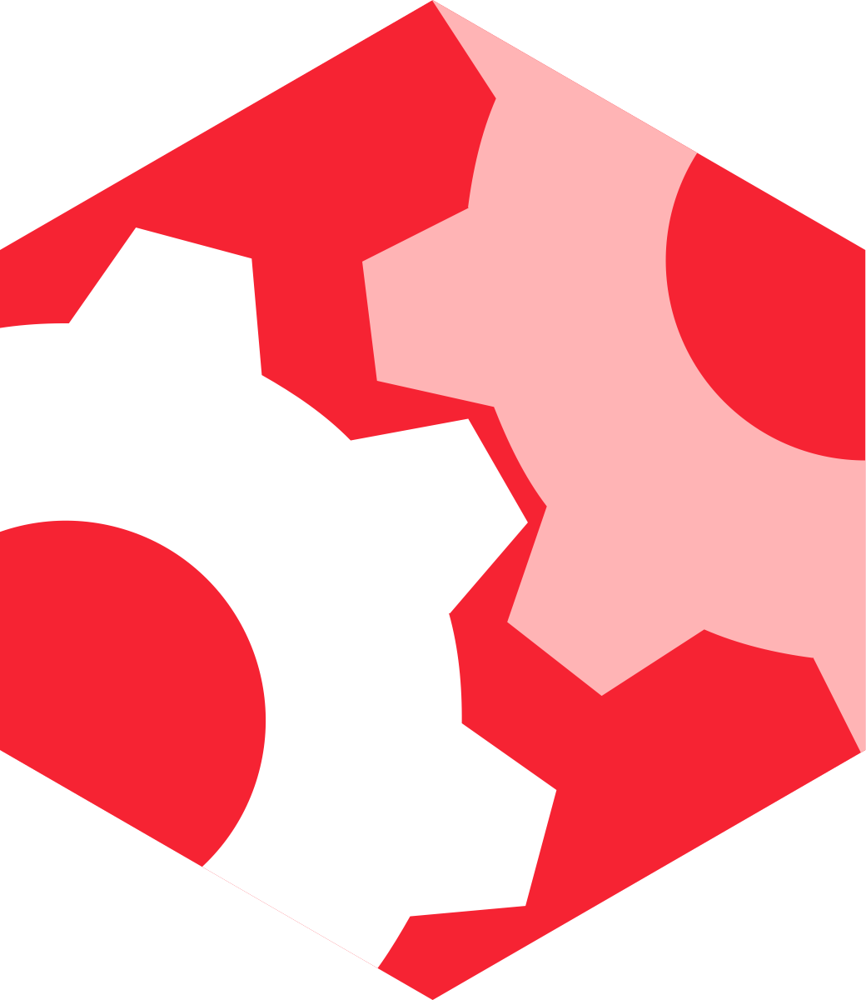

PureConfig



PureConfig is a Scala library for loading configuration files. It reads Typesafe Config configurations written in HOCON, Java .properties, or JSON to native Scala classes in a boilerplate-free way. Sealed traits, case classes, collections, optional values, and many other types are all supported out-of-the-box. Users also have many ways to add support for custom types or customize existing ones.
Click on the demo gif below to see how PureConfig effortlessly translates your configuration files to well-typed objects without error-prone boilerplate.

Documentation
Read the documentation.
Why
Loading configurations has always been a tedious and error-prone procedure. A common way to do it consists in writing code to deserialize each fields of the configuration. The more fields there are, the more code must be written (and tested and maintained…) and this must be replicated for each project.
This kind of code is boilerplate because most of the times the code can be automatically generated by
the compiler based on what must be loaded. For instance, if you are going to load an Int for a field
named foo, then probably you want some code that gets the values associated with the key foo in
the configuration and assigns it to the proper field after converting it to Int.
The goal of this library is to create at compile-time the boilerplate necessary to load a configuration of a certain type. In other words, you define what to load and PureConfig provides how to load it.
Not yet another configuration library
PureConfig is not a configuration library in the sense that it doesn’t search for files or parse them. It can be seen as a better front-end for the existing libraries. It uses the Typesafe Config library for loading raw configurations and then uses the raw configurations to do its magic.
Contribute
PureConfig is a free library developed by several people around the world. Contributions are welcomed and encouraged. If you want to contribute, we suggest to have a look at the available issues and to talk with us on the pureconfig gitter channel.
If you’d like to add support for types which are not part the standard Java or Scala libraries, please consider submitting a pull request to create a module. Pull Request #108 created a very simple module. It should provide a good template for the pieces you’ll need to add.
The steps to create a new module, called nexttopmod, are:
- Define a new project in the root
build.sbt. There are other examples near the top of the file. - Create a new
modules/nexttopmod/subdirectory. - Add a
modules/nexttopmod/build.sbtdefining the module’s name and special dependencies. - Implement converters. Typically they’re in a
package objectinmodules/nexttopmod/src/main/scala/pureconfig/module/nexttopmod/package.scala. - Test the converters. Usually tests would be in
modules/nexttopmod/src/test/scala/pureconfig/module/nexttopmod/NextTopModSuite.scala. - Optionally explain a little bit about how it works in
modules/nexttopmod/README.md.
PureConfig supports the Typelevel code of conduct and wants all of its channels (Gitter, GitHub, etc.) to be welcoming environments for everyone.
License
Mozilla Public License, version 2.0
Special Thanks
To the Shapeless and to the Typesafe Config developers.